- 00 开篇词 为什么大厂面试必考操作系统？.md.html
- 00 课前必读 构建知识体系，可以这样做！.md.html
- 01 计算机是什么：“如何把程序写好”这个问题是可计算的吗？.md.html
- 02 程序的执行：相比 32 位，64 位的优势是什么？（上）.md.html
- 03 程序的执行：相比 32 位，64 位的优势是什么？（下）.md.html
- 04 构造复杂的程序：将一个递归函数转成非递归函数的通用方法.md.html
- 05 存储器分级：L1 Cache 比内存和 SSD 快多少倍？.md.html
- 05 (1) 加餐 练习题详解（一）.md.html
- 06 目录结构和文件管理指令：rm -rf 指令的作用是？.md.html
- 07 进程、重定向和管道指令：xargs 指令的作用是？.md.html
- 08 用户和权限管理指令： 请简述 Linux 权限划分的原则？.md.html
- 09 Linux 中的网络指令：如何查看一个域名有哪些 NS 记录？.md.html
- 10 软件的安装： 编译安装和包管理器安装有什么优势和劣势？.md.html
- 11 高级技巧之日志分析：利用 Linux 指令分析 Web 日志.md.html
- 12 高级技巧之集群部署：利用 Linux 指令同时在多台机器部署程序.md.html
- 12 (1)加餐 练习题详解（二）.md.html
- 13 操作系统内核：Linux 内核和 Windows 内核有什么区别？.md.html
- 14 用户态和内核态：用户态线程和内核态线程有什么区别？.md.html
- 15 中断和中断向量：Javajs 等语言为什么可以捕获到键盘输入？.md.html
- 16 WinMacUnixLinux 的区别和联系：为什么 Debian 漏洞排名第一还这么多人用？.md.html
- 16 (1)加餐 练习题详解（三）.md.html
- 17 进程和线程：进程的开销比线程大在了哪里？.md.html
- 18 锁、信号量和分布式锁：如何控制同一时间只有 2 个线程运行？.md.html
- 19 乐观锁、区块链：除了上锁还有哪些并发控制方法？.md.html
- 20 线程的调度：线程调度都有哪些方法？.md.html
- 21 哲学家就餐问题：什么情况下会触发饥饿和死锁？.md.html
- 22 进程间通信： 进程间通信都有哪些方法？.md.html
- 23 分析服务的特性：我的服务应该开多少个进程、多少个线程？.md.html
- 23 (1)加餐 练习题详解（四）.md.html
- 24 虚拟内存 ：一个程序最多能使用多少内存？.md.html
- 25 内存管理单元： 什么情况下使用大内存分页？.md.html
- 26 缓存置换算法： LRU 用什么数据结构实现更合理？.md.html
- 27 内存回收上篇：如何解决内存的循环引用问题？.md.html
- 28 内存回收下篇：三色标记-清除算法是怎么回事？.md.html
- 28 (1)加餐 练习题详解（五）.md.html
- 29 Linux 下的各个目录有什么作用？.md.html
- 30 文件系统的底层实现：FAT、NTFS 和 Ext3 有什么区别？.md.html
- 31 数据库文件系统实例：MySQL 中 B 树和 B+ 树有什么区别？.md.html
- 32 HDFS 介绍：分布式文件系统是怎么回事？.md.html
- 32 (1)加餐 练习题详解（六）.md.html
- 33 互联网协议群（TCPIP）：多路复用是怎么回事？.md.html
- 34 UDP 协议：UDP 和 TCP 相比快在哪里？.md.html
- 35 Linux 的 IO 模式：selectpollepoll 有什么区别？.md.html
- 36 公私钥体系和网络安全：什么是中间人攻击？.md.html
- 36 (1)加餐 练习题详解（七）.md.html
- 37 虚拟化技术介绍：VMware 和 Docker 的区别？.md.html
- 38 容器编排技术：如何利用 K8s 和 Docker Swarm 管理微服务？.md.html
- 39 Linux 架构优秀在哪里.md.html
- 40 商业操作系统：电商操作系统是不是一个噱头？.md.html
- 40 (1)加餐 练习题详解（八）.md.html
- 41 结束语 论程序员的发展——信仰、选择和博弈.md.html
07 进程、重定向和管道指令：xargs 指令的作用是？
在面试中，我们经常会遇到面试官询问 Linux 指令，06 课时中讲到的rm -rf /属于比较简单的题目，相当于小学难度。这节课给你带来一道初中难度的题目：xargs指令的作用是什么？
通常这个指令是和管道一起使用，因此就引出了这节课的主题：管道。为了理解管道，和学习管道相关的内容，还有一些概念需要你理解，比如：进程、标准流和重定向。好的，接下来请和我一起，把这块知识一网打尽！
进程
为了弄清楚这节课程的内容，也就是管道，我们先来讨论一下进程。
我们知道，应用的可执行文件是放在文件系统里，把可执行文件启动，就会在操作系统里（具体来说是内存中）形成一个应用的副本，这个副本就是进程。
插一个小知识，以后你再遇到面试题：什么是进程？
可以回答：进程是应用的执行副本；而不要回答进程是操作系统分配资源的最小单位。前者是定义，后者是作用*。*
ps
如果你要看当前的进程，可以用ps指令。p 代表 processes，也就是进程；s 代表 snapshot，也就是快照。所谓快照，就是像拍照一样。
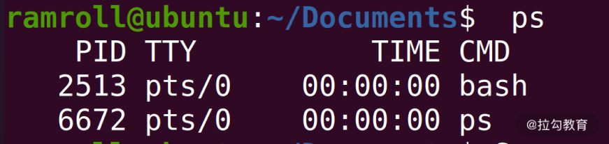
如上图所示，我启动了两个进程，ps和bash。ps 就是我刚刚启动的，被ps自己捕捉到了；bash是因为我开了这个控制台，执行的shell是bash。
当然操作系统也不可能只有这么几个进程，这是因为不带任何参数的ps指令显示的是同一个电传打字机（TTY上）的进程。TTY 这个概念是一个历史的概念，过去用来传递信息，现在已经被传真、邮件、微信等取代。
操作系统上的 TTY 是一个输入输出终端的概念，比如用户打开 bash，操作系统就为用户分配了一个输入输出终端。没有加任何参数的ps只显示在同一个 TTY 的进程。
如果想看到所有的进程，可以用ps -e，-e没有特殊含义，只是为了和-A区分开。我们通常不直接用ps -e而是用ps -ef，这是因为-f可以带上更多的描述字段，如下图所示：
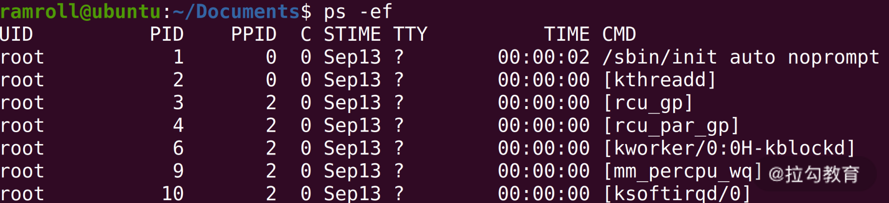
- UID 指进程的所有者；
- PID 是进程的唯一标识；
- PPID 是进程的父进程 ID；
- C 是 CPU 的利用率（就是 CPU 占用）；
- STIME 是开始时间；
- TTY 是进程所在的 TTY，如果没有 TTY 就是 ？号；
- TIME；
- CMD 是进程启动时的命令，如果不是一个 Shell 命令，而是用方括号括起来，那就是系统进程或者内核过程。
另外一个用得比较多的是ps aux，它和ps -ef能力差不多，但是是 BSD 风格的。就是加州伯克利分校研发的 Unix 分支版本的衍生风格，这种风格其实不太好描述，我截了一张图，你可以体会一下：

在 BSD 风格中有些字段的叫法和含义变了，如果你感兴趣，可以作为课后延伸学习的内容。
top
另外还有一个和ps能力差不多，但是显示的不是快照而是实时更新数据的top指令。因为自带的top显示的内容有点少， 所以我喜欢用一个叫作htop的指令，具体的安装全方法我会在 10 | 软件的安装： 编译安装和包管理器安装有什么优势和劣势？中给你介绍。本课时，我们先看一下使用效果，如下图所示：
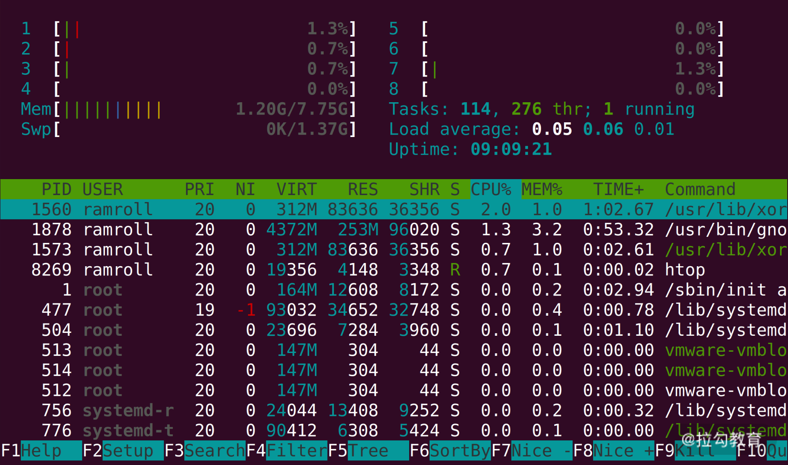
以上，我们一起把进程学了一个皮毛，更多关于进程的内容我们会在模块四：进程和线程中讨论。
管道（Pipeline）
现在你已经掌握了一点点进程的基础，下面我们来学习管道，管道（Pipeline）的作用是在命令和命令之间，传递数据。比如说一个命令的结果，就可以作为另一个命令的输入。我们了解了进程，所以这里说的命令就是进程。更准确地说，管道在进程间传递数据。
输入输出流
每个进程拥有自己的标准输入流、标准输出流、标准错误流。
这几个标准流说起来很复杂，但其实都是文件。
- 标准输入流（用 0 表示）可以作为进程执行的上下文（进程执行可以从输入流中获取数据）。
- 标准输出流（用 1 表示）中写入的结果会被打印到屏幕上。
- 如果进程在执行过程中发生异常，那么异常信息会被记录到标准错误流（用 2 表示）中。
重定向
我们执行一个指令，比如ls -l，结果会写入标准输出流，进而被打印。这时可以用重定向符将结果重定向到一个文件，比如说ls -l > out，这样out文件就会有ls -l的结果；而屏幕上也不会再打印ls -l的结果。
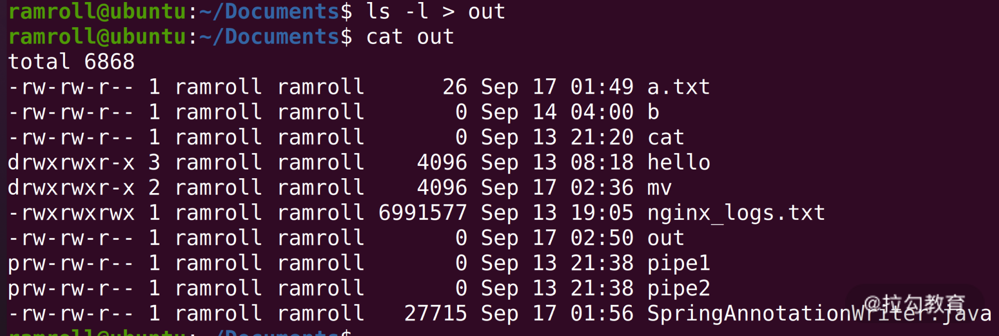
具体来说>符号叫作覆盖重定向；>>叫作追加重定向。>每次都会把目标文件覆盖，>>会在目标文件中追加。比如你每次启动一个程序日志都写入/var/log/somelogfile中，可以这样操作，如下所示：
start.sh >> /var/log/somelogfile
经过这样的操作后，每次执行程序日志就不会被覆盖了。
另外还有一种情况，比如我们输入:
ls1 > out
结果并不会存入out文件，因为ls1指令是不存在的。结果会输出到标准错误流中，仍然在屏幕上。这里我们可以把标准错误流也重定向到标准输出流，然后再重定向到文件。
ls1 &> out
这个写法等价于：
ls1 > out 2>&1
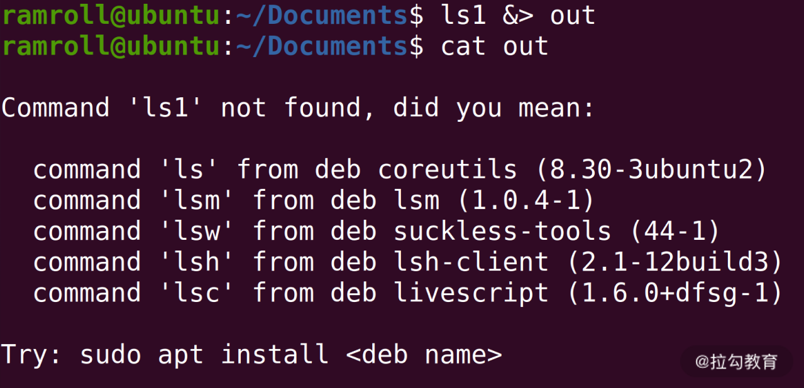
相当于把ls1的标准输出流重定向到out，因为ls1 > out出错了，所以标准错误流被定向到了标准输出流。&代表一种引用关系，具体代表的是ls1 >out的标准输出流。
管道的作用和分类
有了进程和重定向的知识，接下来我们梳理下管道的作用。管道（Pipeline）将一个进程的输出流定向到另一个进程的输入流，就像水管一样，作用就是把这两个文件接起来。如果一个进程输出了一个字符 X，那么另一个进程就会获得 X 这个输入。
管道和重定向很像，但是管道是一个连接一个进行计算，重定向是将一个文件的内容定向到另一个文件，这二者经常会结合使用。
Linux 中的管道也是文件，有两种类型的管道：
- 匿名管道（Unnamed Pipeline），这种管道也在文件系统中，但是它只是一个存储节点，不属于任何一个目录。说白了，就是没有路径。
- 命名管道（Named Pipeline），这种管道就是一个文件，有自己的路径。
FIFO
管道具有 FIFO（First In First Out），FIFO 和排队场景一样，先排到的先获得。所以先流入管道文件的数据，也会先流出去传递给管道下游的进程。
使用场景分析
接下来我们以多个场景举例帮助你深入学习管道。
排序
比如我们用ls，希望按照文件名排序倒序，可以使用匿名管道，将ls的结果传递给sort指令去排序。你看，这样ls的开发者就不用关心排序问题了。
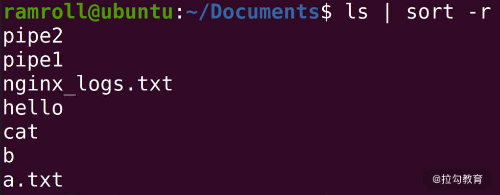
去重
另一个比较常见的场景是去重，比如有一个字典文件，里面都是词语。如下所示：
Apple
Banana
Apple
Banana
……
如果我们想要去重可以使用uniq指令，uniq指令能够找到文件中相邻的重复行，然后去重。但是我们上面的文件重复行是交替的，所以不可以直接用uniq，因此可以先sort这个文件，然后利用管道将sort的结果重定向到uniq指令。指令如下：
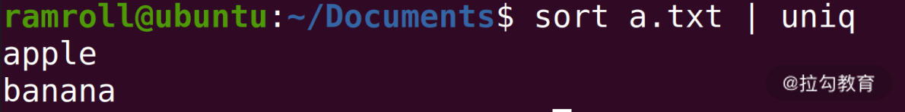
筛选
有时候我们想根据正则模式筛选对应的内容。比如说我们想找到项目文件下所有文件名中含有Spring的文件。就可以利用grep指令，操作如下：
find ./ | grep Spring
find ./递归列出当前目录下所有目录中的文件。grep从find的输出流中找出含有Spring关键字的行。
如果我们希望包含Spring但不包含MyBatis就可以这样操作：
find ./ | grep Spring | grep -v MyBatis
grep -v是匹配不包含 MyBatis 的结果。
数行数
还有一个比较常见的场景是数行数。比如你写了一个 Java 文件想知道里面有多少行，就可以使用wc -l指令，如下所示：
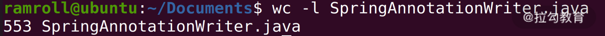
但是如果你想知道当前目录下有多少个文件，可以用ls | wc -l，如下所示：
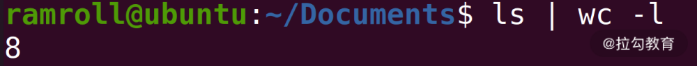
接下来请你思考一个问题：我们如何知道当前java的项目目录下有多少行代码？
提示一下。你可以使用下面这个指令：
find -i ".java" ./ | wc -l
快去自己动手写一写吧，你在尝试的过程中如果遇到什么问题，也可以写在留言区，我会逐一为你解答。
中间结果
管道一个接着一个，是一个计算逻辑。有时候我们想要把中间的结果保存下来，这就需要用到tee指令。tee指令从标准输入流中读取数据到标准输出流。
这时候，你可能会问： 老师， 这不是什么都没做吗？
别急，tee还有一个能力，就是自己利用这个过程把输入流中读取到的数据存到文件中。比如下面这条指令：
find ./ -i "*.java" | tee JavaList | grep Spring
这句指令的意思是从当前目录中找到所有含有 Spring 关键字的 Java 文件。tee 本身不影响指令的执行，但是 tee 会把 find 指令的结果保存到 JavaList 文件中。
tee这个执行就像英文字母中的 T 一样，连通管道两端，下面又开了口。这个开口，在函数式编程里面叫作副作用。
xargs
上面我们学习的内容难度，已经由小学 1 年级攀升到了小学 6 年级，最后我们来看看初中难度的xargs指令。
xargs指令从标准数据流中构造并执行一行行的指令。xargs从输入流获取字符串，然后利用空白、换行符等切割字符串，在这些字符串的基础上构造指令，最后一行行执行这些指令。
举个例子，如果我们重命名当前目录下的所有 .a 的文件，想在这些文件前面加一个前缀prefix_。比如说x.a文件需要重命名成prefix_x.a，我们就可以用xargs指令构造模块化的指令。
现在我们有x.a``y.a``z.a三个文件，如下图所示：
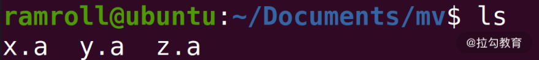
然后使用下图中的指令构造我们需要的指令：
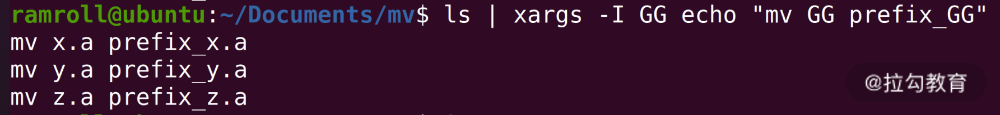
- 我们用
ls找到所有的文件； -I参数是查找替换符，这里我们用GG替代ls找到的结果；-I GG后面的字符串 GG 会被替换为x.a``x.b或x.z；echo是一个在命令行打印字符串的指令。使用echo主要是为了安全，帮助我们检查指令是否有错误。
我们用xargs构造了 3 条指令。这里我再多讲一个词，叫作样板代码。如果你没有用xargs指令，而是用一条条mv指令去敲，这样就构成了样板代码。
最后去掉 echo，就是我们想要的结果，如下所示：
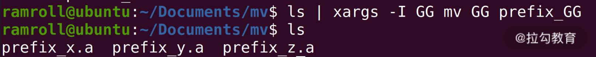
管道文件
上面我们花了较长的一段时间讨论匿名管道，用|就可以创造和使用。匿名管道也是利用了文件系统的能力，是一种文件结构。当你学到模块六文件系统的内容，会知道匿名管道拥有一个自己的inode，但不属于任何一个文件夹。
还有一种管道叫作命名管道（Named Pipeline）。命名管道是要挂到文件夹中的，因此需要创建。用mkfifo指令可以创建一个命名管道，下面我们来创建一个叫作pipe1的命名管道，如下图所示：
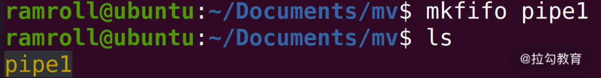
命名管道和匿名管道能力类似，可以连接一个输出流到另一个输入流，也是 First In First Out。
当执行cat pipe1的时候，你可以观察到，当前的终端处于等待状态。因为我们cat pipe1的时候pipe1中没有内容。
如果这个时候我们再找一个终端去写一点东西到pipe中，比如说:
echo "XXX" > pipe1
这个时候，cat pipe1就会返回，并打印出xxx，如下所示：
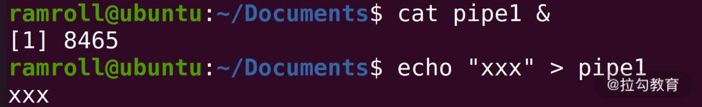
我们可以像上图那样演示这段程序，在cat pipe1后面增加了一个&符号。这个&符号代表指令在后台执行，不会阻塞用户继续输入。然后我们通过echo指令往pipe1中写入东西，接着就会看到xxx被打印出来。
总结
这节课我们为了学习管道，先简单接触了进程的概念，然后学习了重定向。之后我们学习了匿名管道的应用场景，匿名管道帮助我们把 Linux 指令串联起来形成很强的计算能力。特别是xargs指令支持模板化的生成指令，拓展了指令的能力。最后我们还学习了命名管道，命名管道让我们可以真实拿到一个管道文件，让多个程序之间可以方便地进行通信。
那么通过这节课的学习，你现在可以来回答本节关联的面试题目：xargs 的作用了吗？
老规矩，请你先在脑海里构思下给面试官的表述，并把你的思考写在留言区，然后再来看我接下来的分析。
【解析】 xargs 将标准输入流中的字符串分割成一条条子字符串，然后再按照我们自己想要的方式构建成一条条指令，大大拓展了 Linux 指令的能力。
比如我们可以用来按照某种特定的方式逐个处理一个目录下所有的文件；根据一个 IP 地址列表逐个 ping 这些 IP，收集到每个 IP 地址的延迟等。